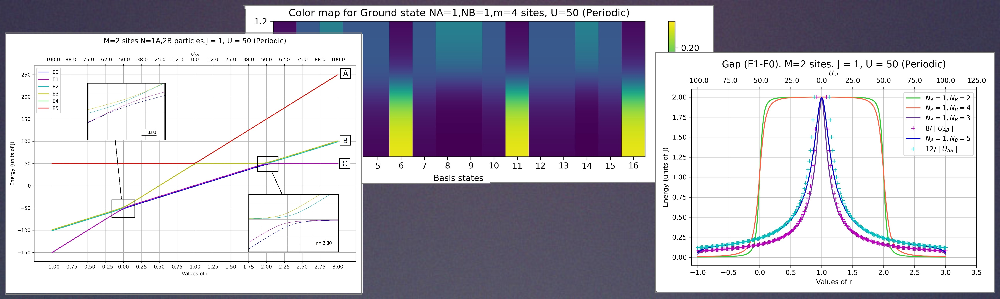

BACHELOR THESIS
Few-body study of the Two-Component Bose-Hubbard model
Abstract: We consider a system of bosonic particles trapped in a one-dimensional optical lattice which we describe by the Bose-Hubbard model. The system properties, e.g. energy spectrum, are studied for different number of particles and interaction strengths. First, we consider the case of a single component, discussing in detail the non-interacting and strongly interacting regimes. Then we consider the case of two components, focusing on the particular case of impurities, and describing the non-integer filling fraction case with an effective theory.
This project was my Bachelor Thesis project, which consisted of 6 ECTS during my last semester of the Physics Bachelor. I was supervised by Dr. Bruno Julià. The main workload of the project consisted in creating the code for the simulations and the posterior theoretical analysis of the results.
The main idea in this project was to simulate the behaviour of few particles trapped in an optical lattice. We consider the 2-component 1D Bose-Hubbard model , which can be used as a quantum simulator for a Heisenberg Chain. The approach is to consider the system with only a few particles involved, which allows the study of the energy states of the system by exact diagonalization, in contraposition to approximate models for larger number of particles. The thesis is considered an extension of the reference: Morera, I., Polls, A. & Juliá-Díaz, B. Entanglement structure of the two-component Bose-Hubbard model as a quantum simulator of a Heisenberg chain.
Project